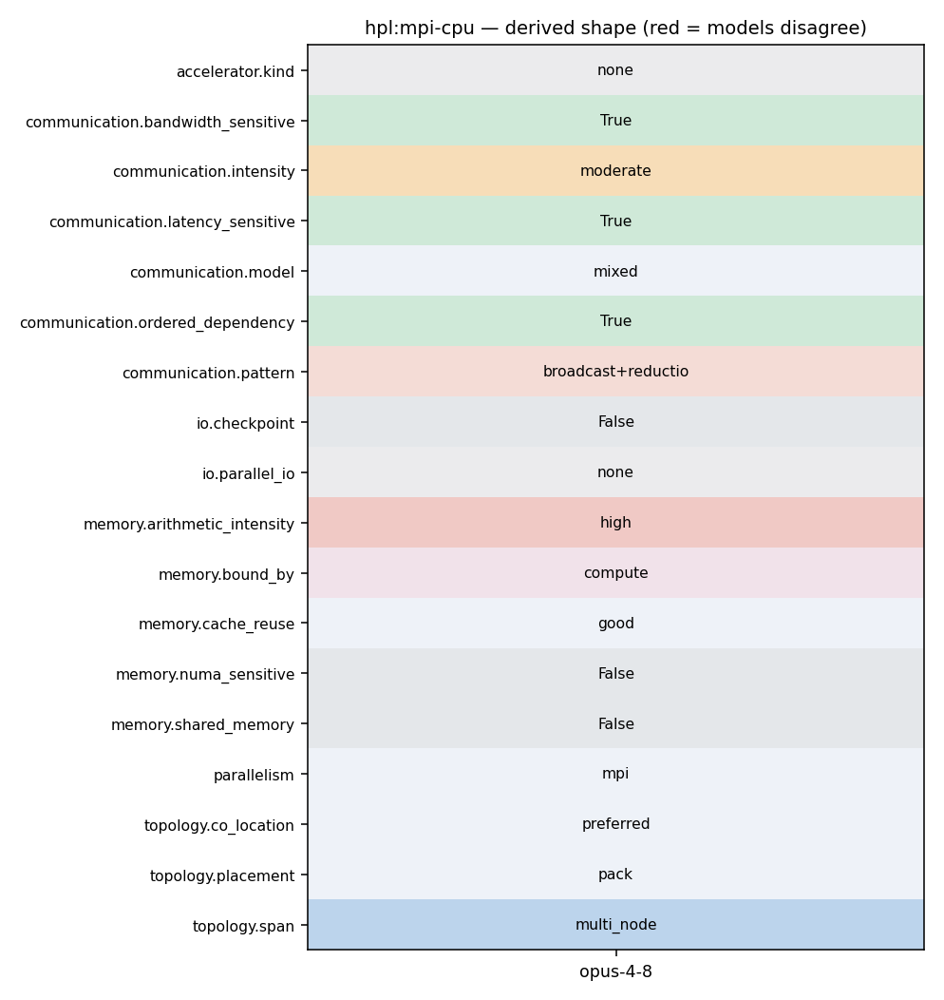

mpirun -np P*Q ./xhpl (P and Q from HPL.dat process grid; e.g. 1x6 and 2x8 need >=16 nodes)
202 * In our case, LDU is N - Do not use the MPI datatype. 203 */ 204 if( ierr == MPI_SUCCESS ) 205 ierr = MPI_Irecv( Mptr( U, 0, ibufR, LDU ), lengthR*LDU, 206 MPI_DOUBLE, partner, Cmsgid, comm, &request ); 207 #endif 208 } 209 210 if( lengthS > 0 ) 211 { 212 #if 0 213 if( ierr == MPI_SUCCESS ) 214 { 215 if( LDU == N ) 216 ierr = MPI_Type_contiguous( lengthS*LDU, MPI_DOUBLE, 217 &type[I_SEND] ); 218 else 219 ierr = MPI_Type_vector( lengthS, N, LDU, MPI_DOUBLE, 220 &type[I_SEND] ); 221 } 222 if( ierr == MPI_SUCCESS ) 223 ierr = MPI_Type_commit( &type[I_SEND] ); 224 if( ierr == MPI_SUCCESS ) 225 ierr = MPI_Send( Mptr( U, 0, ibufS, LDU ), 1, type[I_SEND],
195 if( ierr == MPI_SUCCESS ) 196 ierr = MPI_Type_commit( &type[I_RECV] ); 197 if( ierr == MPI_SUCCESS ) 198 ierr = MPI_Irecv( Mptr( U, 0, ibufR, LDU ), 1, type[I_RECV], 199 partner, Cmsgid, comm, &request ); 200 #else 201 /* 202 * In our case, LDU is N - Do not use the MPI datatype. 203 */ 204 if( ierr == MPI_SUCCESS ) 205 ierr = MPI_Irecv( Mptr( U, 0, ibufR, LDU ), lengthR*LDU, 206 MPI_DOUBLE, partner, Cmsgid, comm, &request ); 207 #endif 208 } 209 210 if( lengthS > 0 ) 211 { 212 #if 0 213 if( ierr == MPI_SUCCESS ) 214 { 215 if( LDU == N ) 216 ierr = MPI_Type_contiguous( lengthS*LDU, MPI_DOUBLE, 217 &type[I_SEND] ); 218 else
337 your platform are single processor computers. If these nodes 338 are multi-processors, a row-major mapping is recommended. 339 340 3) HPL likes "square" or slightly flat process grids. Unless 341 you are using a very small process grid, stay away from the 342 1-by-Q and P-by-1 process grids. 343 344 4) Panel factorization parameters: a good start are the fol- 345 lowing for the lines 14-21:
140 * hdim : dimension of the hypercube made of those ip2 processes; 141 * Np2 : logical flag indicating whether or not nprow is a power of 2; 142 */ 143 comm = grid->col_comm; ip2 = (unsigned int)(grid->row_ip2); 144 hdim = (unsigned int)(grid->row_hdim); n0 = PANEL->jb; 145 icurrow = PANEL->prow; Np2 = (int)( ( size_ = nprow - ip2 ) != 0 ); 146 mydist = MModSub( myrow, icurrow, nprow ); 147 /* 148 * Set up pointers in workspace: WORK and Wwork point to the beginning 149 * of the buffers of size 4 + 2*N0 to be combined. Wmx points to the row 150 * owning the local (before combine) and global (after combine) absolute 151 * value max. A0 points to the copy of the current row of the matrix. 152 */ 153 cnt0 = ( cnt_ = n0 + 4 ) + n0; A0 = ( Wmx = WORK + 4 ) + n0; 154 Wwork = WORK + cnt0; 155 /* 156 * Wmx[0:N0-1] := A[ilindx,0:N0-1] where ilindx is (int)(WORK[1]) (row 157 * with max in current column). If I am the current process row, pack in 158 * addition the current row of A in A0[0:N0-1]. If I do not own any row 159 * of A, then zero out Wmx[0:N0-1]. 160 */ 161 if( M > 0 ) 162 {
151 152 if( rank == root ) 153 { 154 ierr = MPI_Send( _M_BUFF, _M_COUNT, _M_TYPE, next, msgid, comm ); 155 156 if( ( ierr == MPI_SUCCESS ) && ( size > 2 ) ) 157 { 158 if( MModAdd1( next, size ) != roo2 ) 159 { 160 ierr = MPI_Send( _M_BUFF, _M_COUNT, _M_TYPE, 161 MModAdd1( next, size ), msgid, comm ); 162 } 163 164 if( ierr == MPI_SUCCESS ) 165 { 166 ierr = MPI_Send( _M_BUFF, _M_COUNT, _M_TYPE, roo2, msgid, 167 comm ); 168 } 169 } 170 } 171 else 172 { 173 prev = MModSub1( rank, size ); 174 if( ( prev == root ) || ( rank == roo2 ) ||
165 (size_t)(mat.ld+1) * (size_t)(mat.nq) ) * 166 sizeof(double) ); 167 info[0] = (vptr == NULL); info[1] = myrow; info[2] = mycol; 168 (void) HPL_all_reduce( (void *)(info), 3, HPL_INT, HPL_max, 169 GRID->all_comm ); 170 if( info[0] != 0 ) 171 {
151 152 if( rank == root ) 153 { 154 ierr = MPI_Send( _M_BUFF, _M_COUNT, _M_TYPE, next, msgid, comm ); 155 156 if( ( ierr == MPI_SUCCESS ) && ( size > 2 ) ) 157 { 158 if( MModAdd1( next, size ) != roo2 ) 159 { 160 ierr = MPI_Send( _M_BUFF, _M_COUNT, _M_TYPE, 161 MModAdd1( next, size ), msgid, comm ); 162 } 163 164 if( ierr == MPI_SUCCESS ) 165 { 166 ierr = MPI_Send( _M_BUFF, _M_COUNT, _M_TYPE, roo2, msgid, 167 comm ); 168 } 169 } 170 } 171 else 172 { 173 prev = MModSub1( rank, size ); 174 if( ( prev == root ) || ( rank == roo2 ) ||
207 if( ierr == MPI_SUCCESS ) 208 ierr = MPI_Type_commit( &type ); 209 if( ierr == MPI_SUCCESS ) 210 ierr = MPI_Recv( Mptr( U, 0, ibuf, LDU ), 1, type, 211 IPMAP[npm1-partner], Cmsgid, comm, 212 &status ); 213 if( ierr == MPI_SUCCESS ) 214 ierr = MPI_Type_free( &type ); 215 #else 216 /* 217 * In our case, LDU is N - do not use the MPI Datatypes 218 */ 219 if( ierr == MPI_SUCCESS ) 220 ierr = MPI_Recv( Mptr( U, 0, ibuf, LDU ), lbuf*N, 221 MPI_DOUBLE, IPMAP[npm1-partner], 222 Cmsgid, comm, &status ); 223 #endif 224 } 225 else if( partner < nprow ) 226 { 227 #if 0 228 if( ierr == MPI_SUCCESS ) 229 { 230 if( LDU == N )
195 if( ierr == MPI_SUCCESS ) 196 ierr = MPI_Type_commit( &type[I_RECV] ); 197 if( ierr == MPI_SUCCESS ) 198 ierr = MPI_Irecv( Mptr( U, 0, ibufR, LDU ), 1, type[I_RECV], 199 partner, Cmsgid, comm, &request ); 200 #else 201 /* 202 * In our case, LDU is N - Do not use the MPI datatype. 203 */ 204 if( ierr == MPI_SUCCESS ) 205 ierr = MPI_Irecv( Mptr( U, 0, ibufR, LDU ), lengthR*LDU, 206 MPI_DOUBLE, partner, Cmsgid, comm, &request ); 207 #endif 208 } 209 210 if( lengthS > 0 ) 211 { 212 #if 0 213 if( ierr == MPI_SUCCESS ) 214 { 215 if( LDU == N ) 216 ierr = MPI_Type_contiguous( lengthS*LDU, MPI_DOUBLE, 217 &type[I_SEND] ); 218 else
140 * hdim : dimension of the hypercube made of those ip2 processes; 141 * Np2 : logical flag indicating whether or not nprow is a power of 2; 142 */ 143 comm = grid->col_comm; ip2 = (unsigned int)(grid->row_ip2); 144 hdim = (unsigned int)(grid->row_hdim); n0 = PANEL->jb; 145 icurrow = PANEL->prow; Np2 = (int)( ( size_ = nprow - ip2 ) != 0 ); 146 mydist = MModSub( myrow, icurrow, nprow ); 147 /* 148 * Set up pointers in workspace: WORK and Wwork point to the beginning 149 * of the buffers of size 4 + 2*N0 to be combined. Wmx points to the row
385 * Reduce the distributed residual in process column 0 386 */ 387 if( mat.mp > 0 ) 388 (void) HPL_reduce( Bptr, mat.mp, HPL_DOUBLE, HPL_sum, 0, 389 GRID->row_comm ); 390 /* 391 * Compute || b - A x ||_oo
10 current_LIBS="$LIBS" 11 12 cat <<HPLEOF > hplvars.txt 13 name1=OpenBLAS 14 rout1=dgemm_ 15 libs1=-lopenblas -lm 16 17 name2=Atlas Fortran BLAS 18 rout2=dgemm_ 19 libs2=-lf77blas -latlas 20 21 name3=Sequential Intel MKL LP64 (group) 22 rout3=dgemm_ 23 libs3=-Wl,--start-group -lmkl_intel_lp64 -lmkl_sequential -lmkl_core -Wl,--end-group -lpthread -lm 24 25 name4=Sequential Intel MKL LP64 26 rout4=dgemm_ 27 libs4=-lmkl_intel_lp64 -lmkl_sequential -lmkl_core -lpthread -lm 28 29 name5=AMD's ACML 30 rout5=dgemm_ 31 libs5=-lacml -lm 32 33 name6=Accelerate
106 /* .. 107 * .. Executable Statements .. 108 */ 109 MPI_Init( &ARGC, &ARGV ); 110 #ifdef HPL_CALL_VSIPL 111 vsip_init((void*)0); 112 #endif 113 MPI_Comm_rank( MPI_COMM_WORLD, &rank ); 114 MPI_Comm_size( MPI_COMM_WORLD, &size ); 115 /* 116 * Read and check validity of test parameters from input file 117 *
9 portable as well as freely available implementation of the 10 High Performance Computing Linpack Benchmark. 11 12 The HPL software package requires the availibility on your 13 system of an implementation of the Message Passing Interface 14 MPI (1.1 compliant). An implementation of either the Basic 15 Linear Algebra Subprograms BLAS or the Vector Signal Image 16 Processing Library VSIPL is also needed. Machine-specific as 17 well as generic implementations of MPI, the BLAS and VSIPL
202 * In our case, LDU is N - Do not use the MPI datatype. 203 */ 204 if( ierr == MPI_SUCCESS ) 205 ierr = MPI_Irecv( Mptr( U, 0, ibufR, LDU ), lengthR*LDU, 206 MPI_DOUBLE, partner, Cmsgid, comm, &request ); 207 #endif 208 } 209 210 if( lengthS > 0 ) 211 { 212 #if 0 213 if( ierr == MPI_SUCCESS ) 214 { 215 if( LDU == N ) 216 ierr = MPI_Type_contiguous( lengthS*LDU, MPI_DOUBLE, 217 &type[I_SEND] ); 218 else 219 ierr = MPI_Type_vector( lengthS, N, LDU, MPI_DOUBLE, 220 &type[I_SEND] ); 221 } 222 if( ierr == MPI_SUCCESS ) 223 ierr = MPI_Type_commit( &type[I_SEND] ); 224 if( ierr == MPI_SUCCESS ) 225 ierr = MPI_Send( Mptr( U, 0, ibufS, LDU ), 1, type[I_SEND],
337 your platform are single processor computers. If these nodes 338 are multi-processors, a row-major mapping is recommended. 339 340 3) HPL likes "square" or slightly flat process grids. Unless 341 you are using a very small process grid, stay away from the 342 1-by-Q and P-by-1 process grids. 343 344 4) Panel factorization parameters: a good start are the fol- 345 lowing for the lines 14-21:
123 1 2 Ps 124 6 8 Qs 125 126 means that one wants to run xhpl on 2 process grids (line 127 10), namely 1 by 6 and 2 by 8. Note: In this example, it is 128 required then to start xhpl on at least 16 nodes (max of P_i 129 xQ_i). The runs on the two grids will be consecutive. If one 130 was starting xhpl on more than 16 nodes, say 52, only 6 would 131 be used for the first grid (1x6) and then 16 (2x8) would be
3 HPL - 2.3 - December 2, 2018 4 ============================================================== 5 6 HPL is a software package that solves a (random) dense linear 7 system in double precision (64 bits) arithmetic on 8 distributed-memory computers. It can thus be regarded as a 9 portable as well as freely available implementation of the 10 High Performance Computing Linpack Benchmark. 11 12 The HPL software package requires the availibility on your 13 system of an implementation of the Message Passing Interface